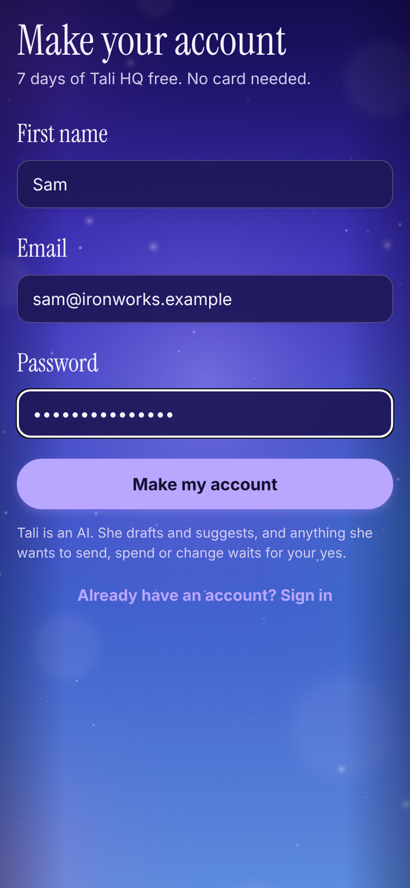
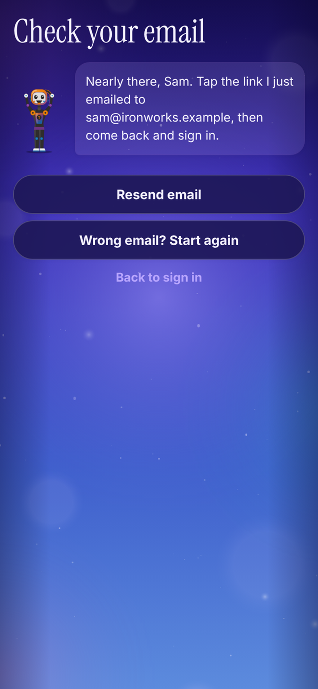
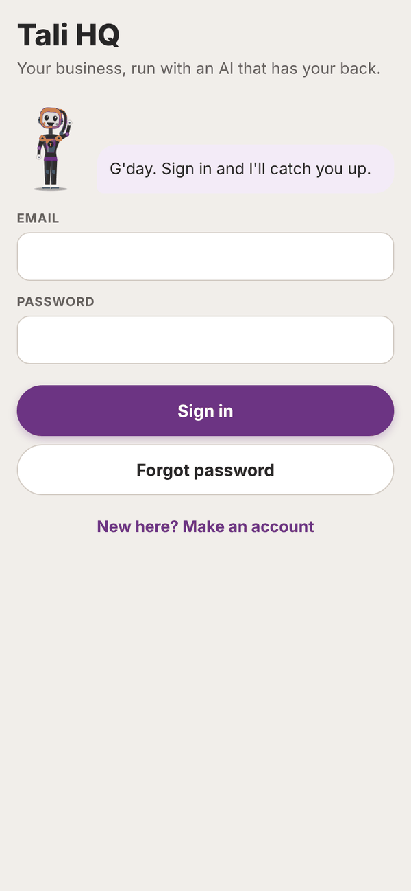
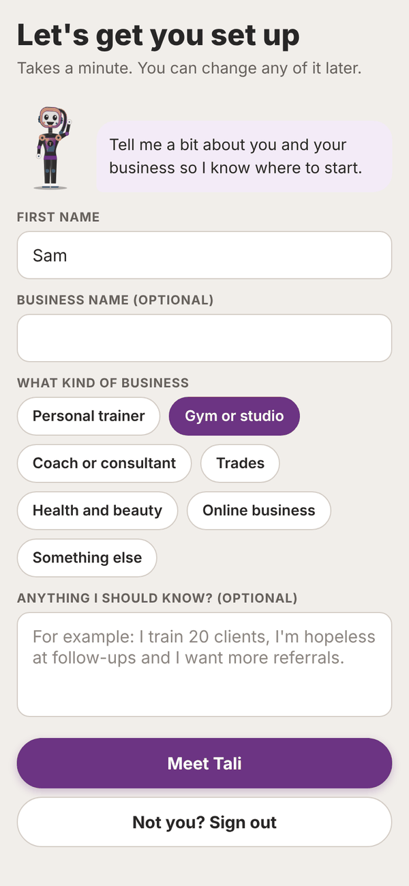
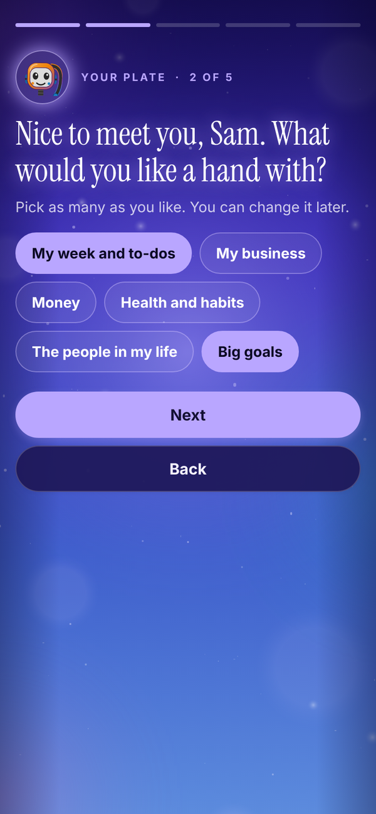
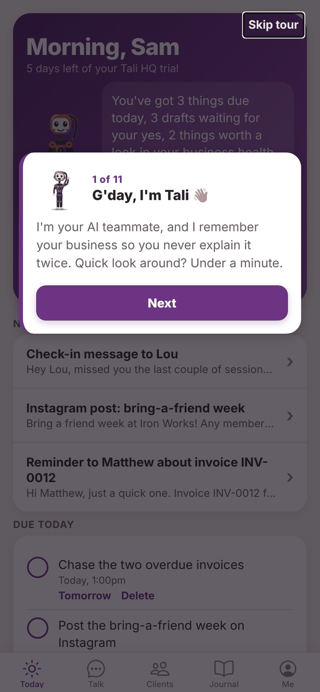
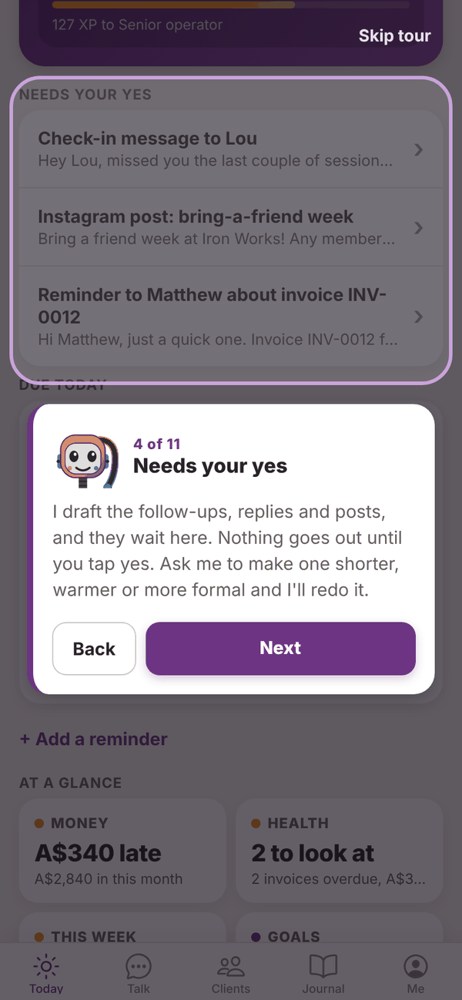

Tali HQ guide
Getting started
Make your account, confirm your email, answer Tali's five questions and take the quick tour.
Setting up takes about two minutes. You make an account, tap the link in the email Tali sends you, answer a few questions about you, and she shows you around.
Make your account#


- Open talihq.com.au in your browser. On your phone, you can add it to your home screen first (in Safari tap Share, then Add to Home Screen; in Chrome tap the menu, then Add to Home screen or Install app).
- Tap New here? Make an account.
- Fill in First name, Email and Password. Your password needs at least 8 characters.
- Tap Make my account.
- The Check your email screen appears. Open the email from Tali HQ and tap the link to confirm your address.
- Come back to Tali HQ and sign in with your email and password.
Your 7 day free trial of Tali HQ starts the moment the account is made. No card needed. Trial
Sign in#

Type your Email and Password and tap Sign in. If you forget your password, type your email in the box first, then tap Forgot password. Tali emails you a link to set a new one. See Troubleshooting if you get stuck.
Meet Tali#
The first time you sign in, Tali asks you a few things, one question to a screen. It takes about a minute.


- What should I call you? Check your First name. This is what Tali calls you.
- What would you like a hand with? Tap as many as you like, for example My week and to-dos, Health and habits, The people in my life or Big goals. You can change it later.
- Do you run a business? Tap yes or No, just me. If you do, add your Business name (optional) and tap the closest match under What kind of business: Personal trainer, Gym or studio, Coach or consultant, Trades, Health and beauty, Online business or Something else.
- Anything I should know from day one? Write a line or two in your own words, up to 1,000 characters. For example, "I'm hopeless at follow-ups, I want to be in bed by ten, and Mum's birthday is in December." It's optional, and everything you tell her becomes a memory in her brain.
- Can I tap you on the shoulder? Tali lists the only things she sends: your morning brief, reminders you asked for, and things worth knowing, like when an invoice gets paid. Tap Turn on notifications and allow them when your phone or browser asks, or tap Not now, meet Tali. This step is skipped on devices that can't show notifications.
- Tap Meet Tali.
Tap Back on any screen to change an answer. Tali also saves your device's time zone, so your brief, reminders and shutdown land at the right local time. You can change your name, the business answer and your details later in Settings.
If this isn't your account (a shared device, or you signed up with the wrong email), tap Not you? Sign out.
The quick tour#
Next, Tali shows you around in a few short cards. Each one points at a real spot: her brain on Today, her level, the box where you tell her things, Needs your yes, Due today and At a glance, then the Talk, Her brain, Your world and Me tabs. The second last card explains how every Tali learns together and how to switch that off.


Tap Next to move on, Back to go back, or Skip tour to finish straight away. It only shows once. To see it again, open Me and tap Show me around again.
What to do next#
- Open Talk and tell Tali three things: who matters to you, what's on your plate this week, and one thing you keep forgetting. The more she knows, the more useful she gets.
- Pick your morning brief time in Me, Settings.
- On the trial, send your Gmail to Tali or connect Outlook, and connect your calendar. See Gmail and Outlook.
- Have a look around Your world. It fills in as you talk. See Your world.
- If you use Totality or Totality Nutrition, link it from Her brain so Tali already knows your goals. See Her brain.
- Turn on notifications so you hear when your brief lands. See Settings and account.
Questions#
How long is the free trial?
7 days of Tali HQ from the moment you make your account. You don't need a card to start it.
What happens when my trial ends?
You move to the Free plan automatically. Nothing is deleted. To keep the Tali HQ features, open Me, tap Plans, then Keep Tali HQ after my trial. See Plans, credits and billing.
Do I have to fill in "Anything I should know from day one?"
No, but it's worth it. Tali reads it before every chat and brief.
I said I run a business but I don't any more. Can I change it?
Yes. Open Me, Settings, and under Do you run a business? tap No, just me, then Save. Your business details are kept in case you switch back.
I skipped notifications. How do I turn them on later?
Open Me, Settings, and tap Turn on notifications on this device. See Settings and account.
Can I change my business type later?
Yes. Open Me, then Settings, change it under What kind of business and tap Save.
I never got the confirmation email.
Check junk and spam, then tap Resend email on the Check your email screen. If you closed that screen, go to the sign in screen and try to sign in; Tali will remind you that a confirmation email is waiting. Still stuck? Email admintotality@gmail.com.
Can I skip the tour and see it later?
Yes. Tap Skip tour, then any time later open Me and tap Show me around again.